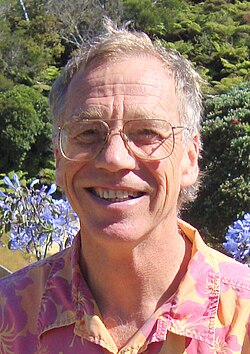

Michael Freedman | |
|---|---|
 Freedman in 2010 | |
| Born | Michael Hartley Freedman April 21, 1951 (age 75) Los Angeles, California, U.S. |
| Alma mater | Princeton University (PhD) |
| Known for | Work on the Generalized Poincaré conjecture in dimension 4 Systolic geometry E8 manifold NLTS conjecture |
| Awards | Sloan Research Fellowship (1980) MacArthur Fellowship (1984) Oswald Veblen Prize in Geometry (1986) Fields Medal (1986) National Medal of Science (1987) Guggenheim Fellowship (1994) |
| Scientific career | |
| Fields | Mathematics |
| Institutions | Microsoft Station Q UC Santa Barbara UC San Diego Institute for Advanced Study UC Berkeley |
| Thesis | Codimension-Two Surgery (1973) |
| William Browder | |
Doctoral students | Ian Agol Zhenghan Wang |
Michael Hartley Freedman (born April 21, 1951) is an American mathematician at Microsoft Station Q, a research group at the University of California, Santa Barbara.[1] In 1986, he was awarded a Fields Medal[2] for his work on the Freedman classification named after him and subsequently the 4-dimensional generalized Poincaré conjecture. Freedman and Robion Kirby showed that an exotic R4 manifold exists.
Freedman was born in Los Angeles, California, in the United States. His father, Benedict Freedman, was an American Jewish aeronautical engineer, musician, writer, and mathematician.[3][4] His mother, Nancy Mars Freedman, performed as an actress and also trained as an artist.[5] His parents cowrote a series of novels together.[4] He entered the University of California, Berkeley, but dropped out after two semesters.[6] In the same year he wrote a letter to Ralph Fox, a Princeton University professor at the time, and was admitted to the university's graduate school, where in 1968 he continued his studies and received a Ph.D. in 1973 for his doctoral dissertation titled Codimension-Two Surgery, written under the supervision of William Browder.
After graduating, Freedman returned to Berkeley, where he was a lecturer in the department of mathematics until 1975. He left Berkeley to become a member of the Institute for Advanced Study (IAS) in Princeton. In 1976 he was appointed assistant professor in the department of mathematics at the University of California, San Diego. He spent the year 1980/81 at IAS, then returned to UCSD, where in 1982 he was promoted to professor. He was appointed the Charles Lee Powell chair of mathematics at UCSD in 1985.
Freedman has received numerous awards and honors including Sloan and Guggenheim Fellowships, a MacArthur Fellowship, and the National Medal of Science. He is an elected member of the National Academy of Sciences, and a fellow of the American Academy of Arts and Sciences and of the American Mathematical Society.[7] In addition to winning a Fields Medal at the International Congress of Mathematicians (ICM) in 1986 in Berkeley, he was an Invited Speaker at the ICM in 1983 in Warsaw[8] and at the ICM in 1998 in Berlin.[9] He currently works at Microsoft Station Q at the University of California, Santa Barbara, where his team is involved in the development of the topological quantum computer.
Freedman is currently Chief Mathematician at Logical Intelligence, a research startup working with large language models.[10]
.jpg){kind=link}